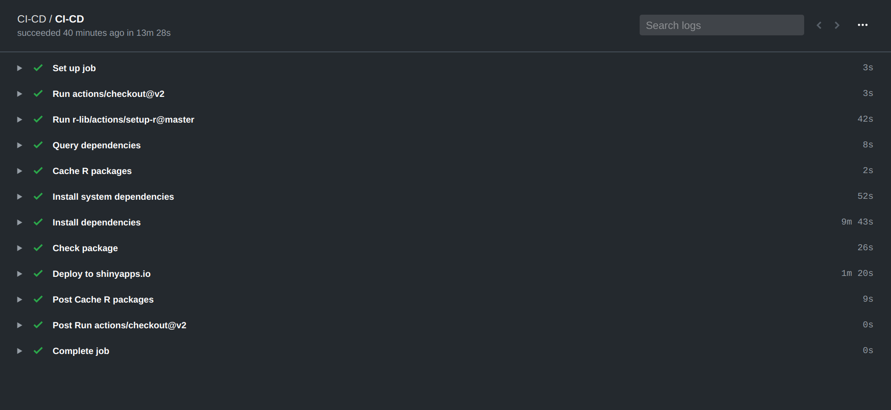

3.3 GitHub Actions
GitHub Actions is a service for running highly-customizable and flexible automated workflows, fully integrated with GitHub and very suitable to CI/CD pipelines.
Workflows use YAML syntax and should be stored in the .github/workflows directory in the root of the repository.
Workflows are constituted of jobs and each job is a set of steps to perform individual tasks, e.g. commands or actions.
3.3.1 Workflow steps
A workflow should have an identifying name and an on section indicating upon which events the workflow should be triggered. It should include at least one job and each job will have a set of steps fully specifying what to execute. Such steps can be a (predefined) action or a script, however, for the time being, GitHub Actions does not support a hierarchical, aggregated structure of actions. Being fully customizable, it is necessary to fully specify each step in the CI/CD pipeline explicitly.
3.3.1.1 Setup
- Checkout the source package from the repo, using
actions/checkoutprovided by GitHub. - Setup R using action
r-lib/actions/setup-r - Query and cache R package dependencies using
remotes::dev_package_deps()and theactions/cachepredefined action. - Install system dependencies using package
sysreqs::sysreq_commands()(for theubunturunner used to run the action) - Install R package dependencies using
remotes::Install_deps()
3.3.1.2 Package check
- Check the package via using
rcmdcheck::rcmdcheck()
3.3.1.3 Deployment
- Deploy to shinyapps.io, similar to the Travis CI case
- In this case, environment variables
SHINYAPPS_ACCOUNT,SHINYAPPS_TOKENandSHINYAPPS_SECRET, defining credentials for shinyapps.io), are specified / accessible as GitHub secrets. - An R script e.g.
deploy/deploy-shinyapps.R(build-ignored viausethis::use_build_ignore("deploy")) defines the deployment commands based on the environment variables:
# deploy/deploy-shinyapps.R # usethis::use_build_ignore("deploy") rsconnect::setAccountInfo( Sys.getenv("SHINYAPPS_ACCOUNT"), Sys.getenv("SHINYAPPS_TOKEN"), Sys.getenv("SHINYAPPS_SECRET") ) rsconnect::deployApp( appName = "ShinyCICD", # exclude hidden files and renv directory (if present) appFiles = setdiff(list.files(), "renv") ) - In this case, environment variables
3.3.2 Workflow file
The steps above are defined in the .yml workflow file as follows
# Triggered on push and pull request events
on: [push, pull_request]
# Name of the workflow => usethis::use_github_actions_badge("CI-CD")
name: CI-CD
jobs:
CI-CD:
runs-on: ubuntu-latest
steps:
- uses: actions/checkout@v2
- uses: r-lib/actions/setup-r@master
- name: Query dependencies
shell: Rscript {0}
run: |
install.packages('remotes')
saveRDS(remotes::dev_package_deps(dependencies = TRUE), ".github/depends.Rds", version = 2)
writeLines(sprintf("R-%i.%i", getRversion()$major, getRversion()$minor), ".github/R-version")
- name: Cache packages
uses: actions/cache@v2
with:
path: ${{ env.R_LIBS_USER }}
key: ${{ runner.os }}-${{ hashFiles('.github/R-version') }}-${{ hashFiles('.github/depends.Rds') }}
restore-keys: |
${{ runner.os }}-${{ hashFiles('.github/R-version') }}-
- name: Install system dependencies
env:
RHUB_PLATFORM: linux-x86_64-ubuntu-gcc
run: |
Rscript -e "remotes::install_github('r-hub/sysreqs')"
sysreqs=$(Rscript -e "cat(sysreqs::sysreq_commands('DESCRIPTION'))")
sudo -s eval "$sysreqs"
- name: Install dependencies
shell: Rscript {0}
run: remotes::install_deps(dependencies = TRUE)
- name: Check package
shell: Rscript {0}
run: |
install.packages("rcmdcheck")
rcmdcheck::rcmdcheck(args = "--no-manual", error_on = "warning")
- name: Deploy to shinyapps.io
if: github.ref == 'refs/heads/master'
env:
SHINYAPPS_ACCOUNT: ${{ secrets.SHINYAPPS_ACCOUNT }}
SHINYAPPS_TOKEN: ${{ secrets.SHINYAPPS_TOKEN }}
SHINYAPPS_SECRET: ${{ secrets.SHINYAPPS_SECRET }}
run: Rscript deploy/deploy-shinyapps.RAs visible from the run logs, all the CI/CD pipeline steps are performed subsequently, and are identifiable by the name field.

3.3.3 usethis::use_github_action()
In order to use the GitHub action workflow above, or its renv-based variant, you can simply:
usethis::use_github_action(
url =
"https://mirai-solutions.ch/techguides/shiny-ci-cd/actions/ci-cd.yml"
# "https://mirai-solutions.ch/techguides/shiny-ci-cd/actions/ci-cd-renv.yml"
# "https://mirai-solutions.ch/techguides/shiny-ci-cd/actions/ci.yml"
# "https://mirai-solutions.ch/techguides/shiny-ci-cd/actions/ci-renv.yml"
)
usethis::use_github_actions_badge("CI-CD") # or "CI"